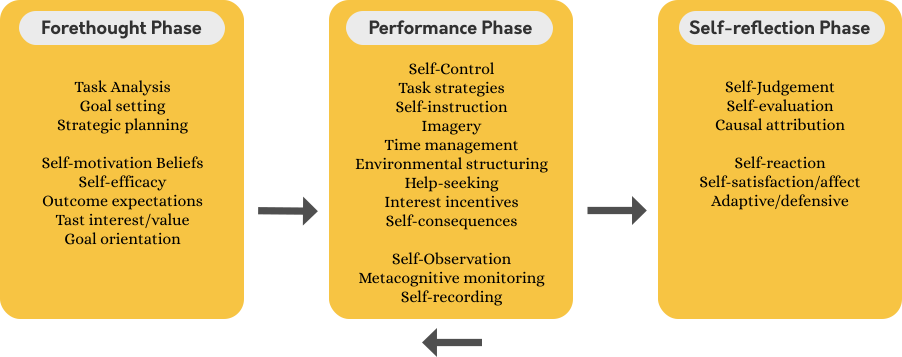
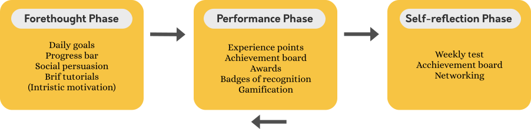
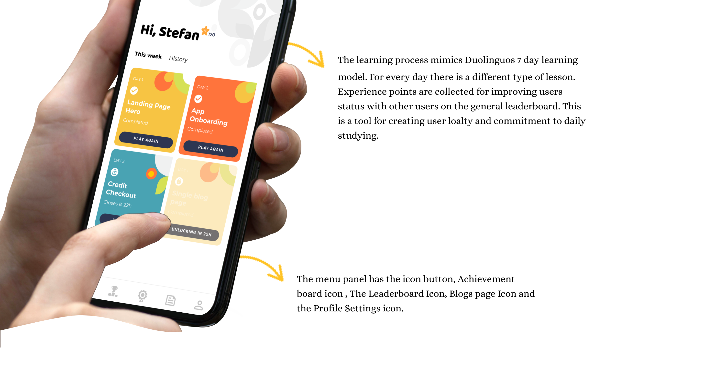
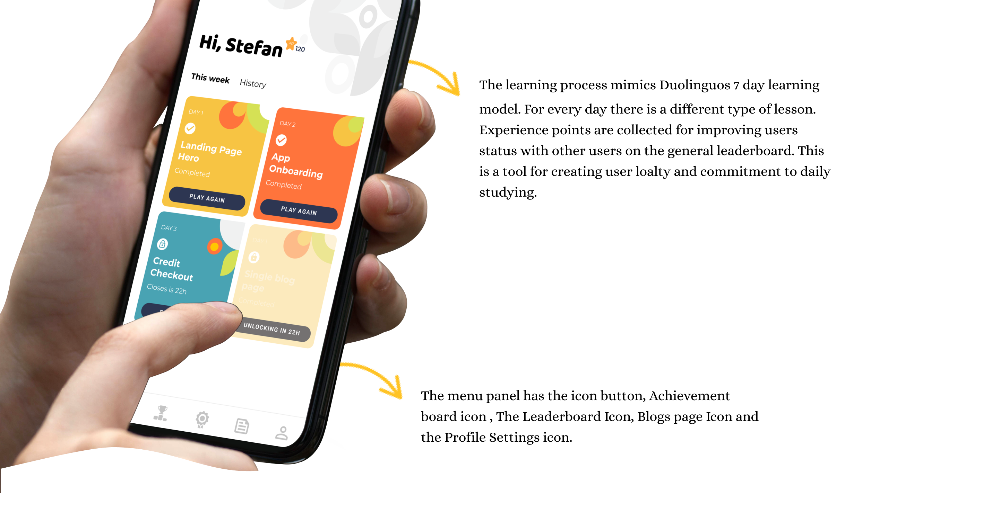

Being a student at Brainster UX/UI Academy, I was given an individual assignment to create a mobile app for their e-learning program in November 2021. Over the period of one month, I researched, designed and prototyped a mobile app as an additional channel to convert users to our UX/UI Design bootcamp, so users could properly go through the full Brainster learning experience.
The Process
As this was my first individual project, I made a tight schedule including user research, journey map, problem definition, brainstorm, prototype, business model and pitch preparation. Due to the time limitation, we did not get the chance to conduct the usability tests and iterate, but we would definitely include those process in the future steps.
Week 1
Research
Week 2
Wireframes
Week 3
Design & Iterate
Week 4
Usability testing
Research
I conducted an extensive research in theoretical findings about educational psychology of learning. In this field, one author Zimmerman points out with his model of self-regulated learning.
Self-learning model
Self-regulated learning is a cyclical process, wherein the student plans for a task, monitors their performance, and then reflects on the outcome. The cycle then repeats as the student uses the reflection to adjust and prepare for the next task.
The forethought phase: This is also known as a planning phase, where learners set achievable short- or long-term goals, choose strategies that best address a pursue those goals, and assess their beliefs and interest to the learning environment. The performance phase: Learners implement strategies to make ongoing adjustments in order to progress towards their goals via self-monitoring and self-control. The self-reflection phase: Learners evaluate the effectiveness of their strategies and examine their satisfaction on the learning tasks. Feedback from this self-reflection phase will then apply to the start of the next SRL cycle.
I discovered another two university researchers that dealt with applying Zimmermans self-learning model in online learning platforms, Rebecca Cheng, Ph.D. and Iris Poon.They applied the self-learning model on two different e-learning platforms: Duolinguo and Codeacademy. By analyzing both findings I managed to get insight and define the must haves in my application:

 
